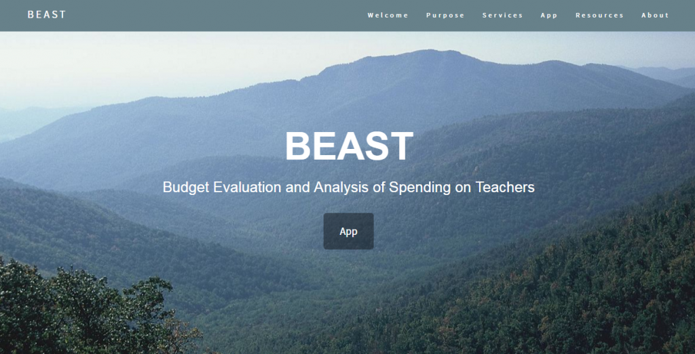

Computer Club is a club that takes place during and after school where students can either hang out or take programming classes without feeling under pressure. The languages include Python and Java. The teachers are composed of students that are knowledgeable in the field, so students have a more friendly and familiar learning environment. Students may choose whatever class they want and are allowed to change their minds at any time. There are meetings held every Tuesday, while food and drinks are brought every Friday after school.
A club for the girls in the center. This club promotes girls in the technology field. Girls of CIT also involves field trips in which girls can interact and network with other women in the technology field in order to learn more about the experience women have in technology fields.
Only 18 percent of Advanced Placement computer science exam-takers in 2009 were girls; that’s the lowest female representation of any AP exam.
CS degrees earned by women drastically dropped from 37 percent in 1985 to 18 percent in 2009.
Half of all the professional occupations in the U.S. are held by women, but only 25 percent of all computing-related occupations are held by women.
At Fortune 500 technology companies, only 11 percent of corporate officer positions are held by women.
Studies in U.S. technology patenting reveal that patents created by mixed-gender teams are the most highly cited (an indicator of their innovation and usefulness); however, women were involved in only 9 percent of U.S. tech patents.
CSHS is an honor society based in Deep Run High School which gives opportunities for students to participate in technology related events outside of school. This allows students to engage with professionals outside the center and gain more knowledge in various areas such as Cybersecurity, Programming, and Project Management.
The Center students represent Deep Run in many different aspects. The students of the center are well-rounded students who partake in many various activities. An abundant amount of the students are members of sports teams ranging from basketball, gymnastics, lacrosse, volleyball, cheerleading, tennis, etc.
Many students in the CIT are involved with Robotics. The students work together to design, build, and program robots to perform various activities. Some students are in leadership positions where they mentor and direct other club members. Students are exposed to using various tools when building robots.
The Deep Run Wildcat Band is as intertwined with the Center as any other extracurricular here. Many Center students participate in the band, some of them with leadership roles in the band. The Deep Run Band has been a Virginia Honors band consecutively for the past ten years. This entails that both our marching band and the upper-concert band received superior ratings at their assessments. We are under the direction of Mr. Pennington who has been directing bands across central Virginia for twenty years. The marching band, specifically, is considered one of Virginia's finest and has enormous success with every aspect of performance at a plethora of contests.
During the summer before senior year, students are required to partake in an internship. This internship enables students to engage in real world IT events. Through this internship, students are able to utilize their project management skills and their previous experience with clients from the nonprofit project. This internship gives students a feel for how a career in IT would be. This internship also enables students to practice technical skills that they have learned throughout their CIT courses such as software design and program development.
"For my summer internship, I interned at Genworth Financial
. I was selected for GCAS (Genworth Corporate Auditing Services). My task was to automate the generation of reports using SAP Business Objects and the messy MS SQL database that their auditing software, TeamMate, uses. The old system was to use 160 line MS SQL queries to create a table and then paste that result into excel for a VB script to transform it into human-readable output; the end result was a system where columns and other information you wanted in your table could be dragged in, and then it would generate a matching table for you and export it as a PDF."
Former CIT Student, Stuart G.
Each spring, sophomore and junior students in the CIT take part in a program called Apps4VA aimed at creating fresh, new, innovative ways to present educational data in a new light. A couple of years ago, one of our teams went on to win the first-ever Virginia Virtual Datathon hosted by the Chief Data Officer of VA and the Governor; this team also later presented at the Commonwealth of Virginia Information Technology Symposium (COVITS) where they won the People's Choice Award. This year, the CIT Team presented a project relating to COVID-19 at the VA Datathon and garnered an honorable mention from the judges.
The emergence of COVID-19 earlier presented unique challenges to various aspects of daily-life and exacerbated many of the existing inequalities in our society and many of fundamental problems in healthcare and resource-distribution. During the 2020 Datathon, the Deep Run CIT presented a project that focused on the scope and effects of COVID-19 on the collective mental health of people in Virginia. In this project, the team explored the shortage of mental health resources in the commonwealth and presented strategies to alleviate this problem. This project was developed by CIT students Ronojoy D, Abhay S, Adam E, Virinchi T, and Collin R.

Every year, Virginia spends billions of dollars on Education. Our application takes a look at these spendings as well as its effects. Is our increased spending making a difference? Visit the Analyze page to view state wide analysis, or visit the Map page to look straight into the data yourself. Use the search bar to see statistics for specific counties.

BEAST is an app created to compare teacher salary to student performance. It shows how efficiently different schools pay their teachers. BEAST also helps schools adjust their budgets after seeing this correlation. This project was developed by former CIT students Dominic, Lauren, Peyton, Jack, Justin, Tahir, Colin, and Jessica.
People with disabilities are the world's largest minority, yet often times they are not featured as much as they should be. Introducing Analysis of Special Education (ASE), the web application that breaks through the numbers to see how Special Education is succeeding in schools. With the use of education data from Virginia school systems, ASE parallels the success of students with disabilities to those without. This project was developed by former CIT students Jessica, Nigel, Vamsi, Noah, Alex, Gurumanpreet, Qian, Benjamin, and Michael.

DropStop is an app aimed at helping division and state policymakers find out where certain groups of students are falling behind. It reveals and compares dropout rates among different races, genders, disabilities, economic statuses, and LEP statuses to help establish where changes need to be made. This project was developed by former CIT students Lexi, Sydney, Brandon, Kevin, Forest, Grant, Lee, and Ethan.